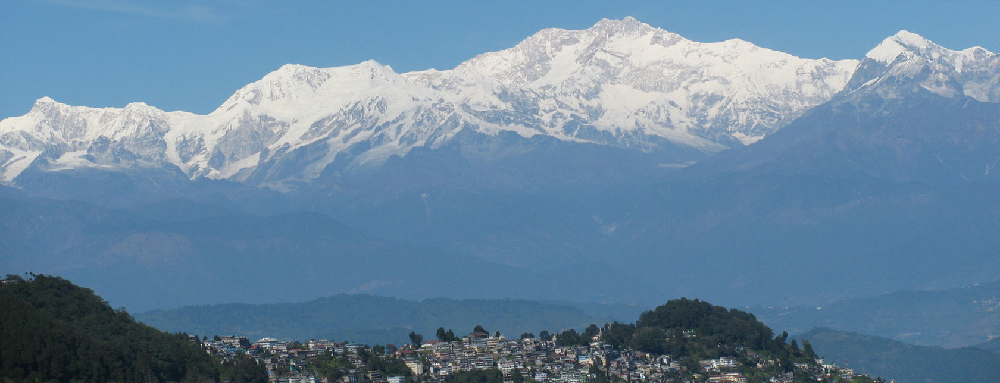

DARJEELING
Darjeeling is a town in India's West Bengal state, in the Himalayan foothills. Once a summer resort for the British Raj elite, it remains the terminus of the narrow-gauge Darjeeling Himalayan Railway, or “Toy Train,” completed in 1881. It's famed for the distinctive black tea grown on plantations that dot its surrounding slopes. Its backdrop is Mt. Kanchenjunga, among the world’s highest peaks.
DIGHA BEACH

Digha is the most popular sea beach in West Bengal. It is located 187 km south-west of Kolkata. Digha has a low gradient with shallow sand beach that extends up to 7 km in length and has gentle rolling waves. The scenic beauty of this place is charming and alluring.
KALIMPONG
Kalimpong is an east Indian hill town in the Himalayan foothills of West Bengal. Perched on a ridge above the Teesta River, it’s home to colonial-era buildings like MacFarlane Memorial Church, named after a Scottish missionary. South, the hilltop Durpin Monastery, or Zang Dhok Palri Phodang, contains sacred Buddhist scriptures. Deolo Park has landscaped gardens and offers views of the town and surrounding hills.
KURSEONG
Kurseong is a town and a municipality in Darjeeling district in the Indian state of West Bengal. It is the headquarters of the Kurseong subdivision. Located at an altitude of 1,482.55 metres, Kurseong is 32 kilometres from Darjeeling and has a pleasant climate throughout the year.
MANDARMANI
Mandarmani is a seaside resort village in the state of West Bengal, India, and lies in East Midnapore district, at the northern end of the Bay of Bengal. It is one of the largest seaside resorts of West Bengal, fast-developing.
SILIGURI
Siliguri is a city in the northeast Indian state of West Bengal. It sits in the foothills of the Himalayas, surrounded by tea gardens. It’s home to the North Bengal Science Centre, with its digital planetarium and model T. rex. To the east is leafy Surya Sen Park, named after an independence activist, and the huge, white-domed ISKCON Temple. Farther north, the Salugara Monastery is a colorful Buddhist shrine.
SUNDARBANS
Sundarbans is a mangrove area in the delta formed by the confluence of the Padma, Brahmaputra and Meghna Rivers in the Bay of Bengal. It spans the area from the Baleswar River in Bangladesh's division of Khulna to the Hooghly River in India's state of West Bengal.